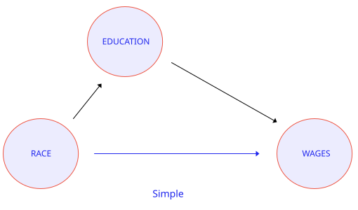
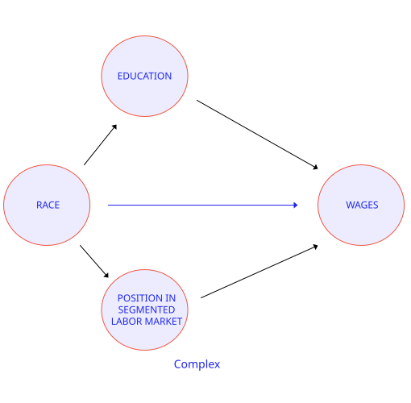
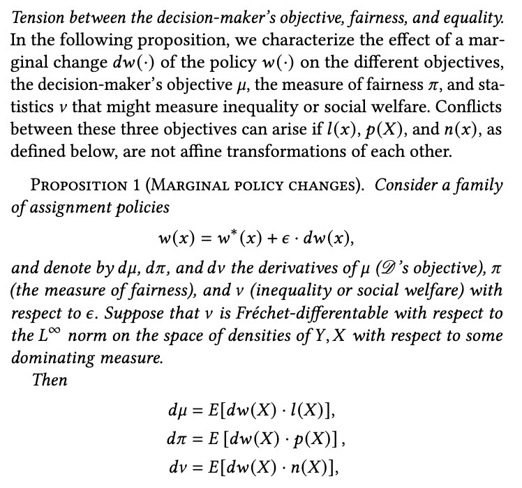
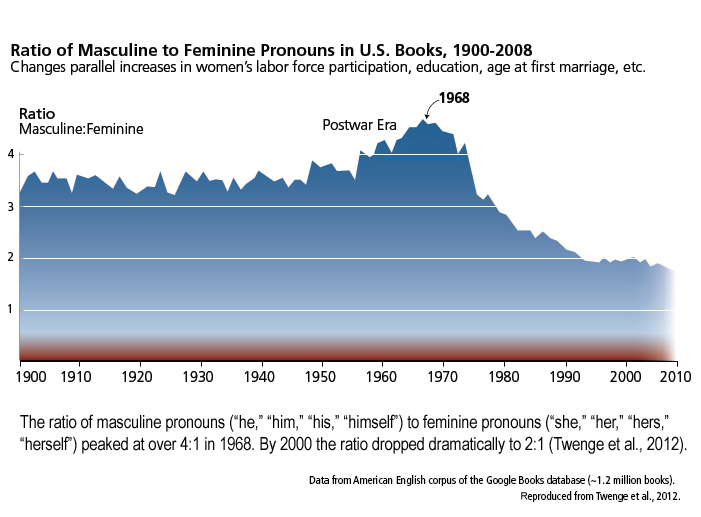
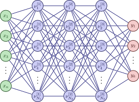
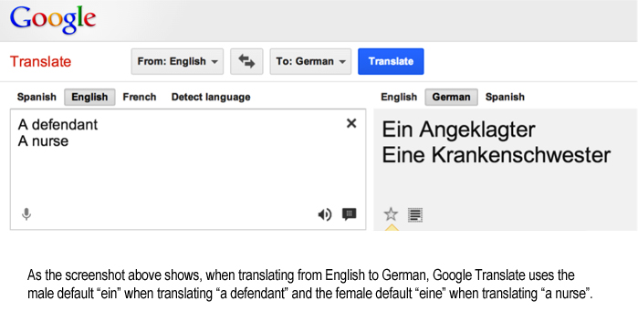
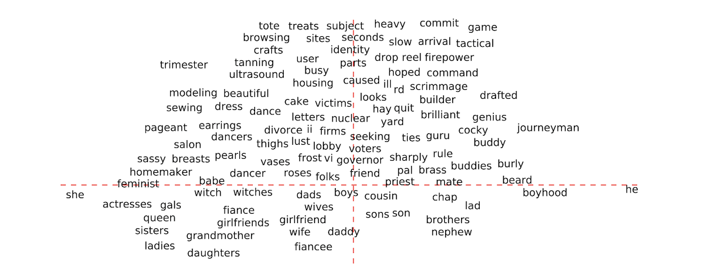
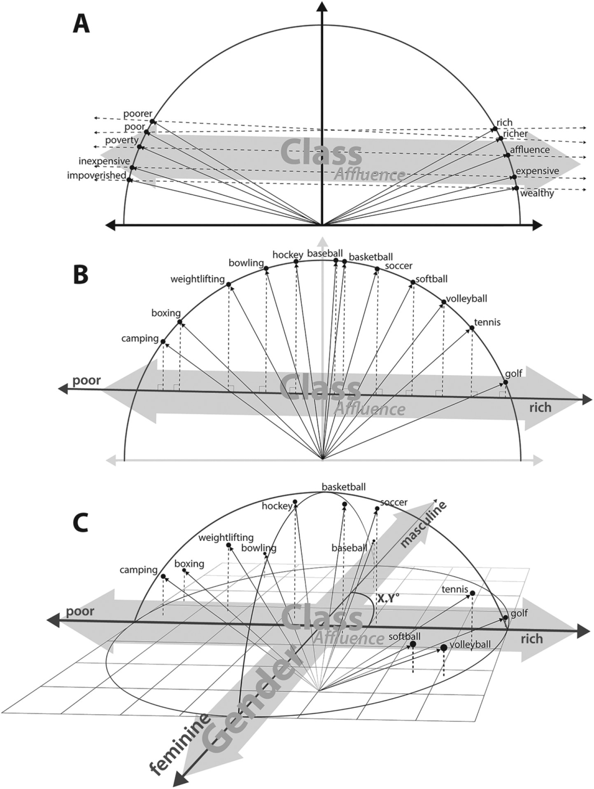
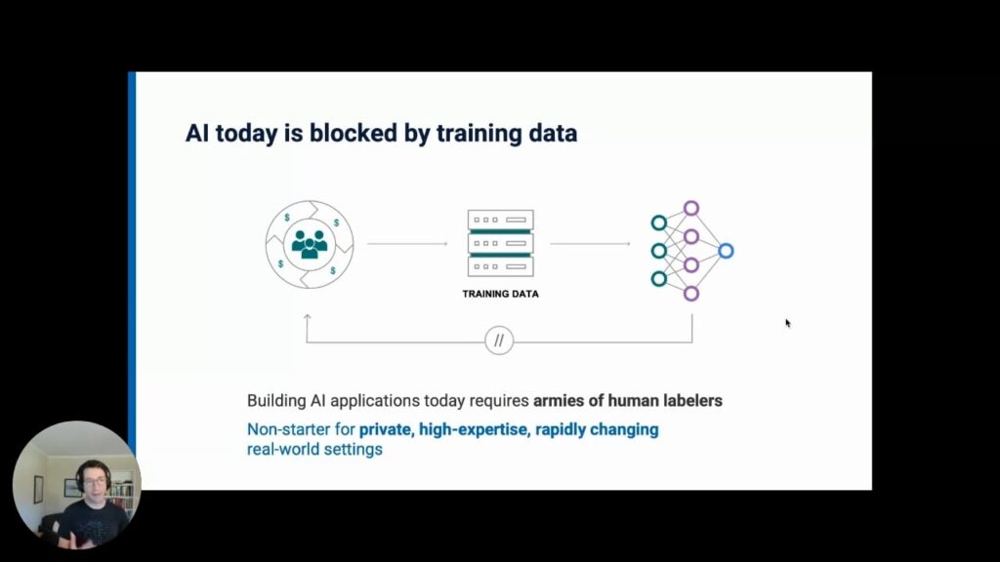
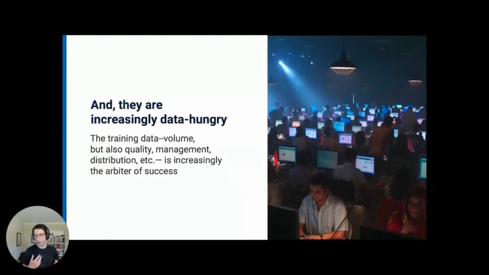

Week 2: Machine Learning, Training Data, and Bias
DSAN 5450: Data Ethics and Policy
Spring 2024, Georgetown University
Class Sessions
Ethical Issues in Data Science
- Data Science for Who?
- Operationalization
- Fair Comparisons
- Implementation
Data Science for Who?
- What are the processes by which data is measured, recorded, and distributed?

Example: Measuring “Freedom” and “Human Rights”
- Freedom House Ratings are the most common measure of “freedom” in a country, across social science literature; US State Dept. Country Reports on Human Rights Practices are the most common measure of “human rights” in a country, across social science literature
- (you can take my word for it, or browse e.g. American Political Science Review)
- …So what’s the issue? (What is Jeff whining about this time?)

Example: Measuring “Freedom” and “Human Rights”
Operationalization
- Think about claims commonly made on the basis of “data”:
- Markets create economic prosperity
- A glass of wine in the evening prevents cancer
- Policing makes communities safer
- How exactly are “prosperity”, “preventing cancer”, “policing”, “community safety” being measured?

What Is Being Compared?
- Are countries with 1 billion people comparable to countries with 10 million people?
- Are countries which were colonized comparable to the colonizing countries?
- When did the colonized countries gain independence?

Implementation
Fairness… 🧐



…And INVERSE Fairness 🤯

Ethical Issues in Applying Data Science
Facial Recognition Algorithms


Large Language Models



Military and Police Applications of AI
Machine Learning at 30,000 Feet
Three Component Parts of Machine Learning
- A cool algorithm
- Training data
- Human labor
A Cool Algorithm

Training Data

From Gendered Innovations in Science, Health & Medicine, Engineering, and Environment
Word Embeddings

Removing vs. Studying Biases

Human Labor
- Generating Training Data


What Comes With Human Labels? Human Biases!
- “Reification”: Pretentious word for an important phenomenon, whereby talking about something (e.g., race) as if it was real ends up leading to it becoming real (having real impacts on people’s lives)1
On average, being classified as a White man as opposed to a Coloured man would have more than quadrupled a person’s income. (Pellicer and Ranchhod 2023)
Reification in Science
- Goodhart’s Law: “When a measure becomes a target, it ceases to be a good measure”
- Cat-and-mouse game between goals and ways of measuring progress towards goals
Nuts and Bolts for Fairness
One Final Reminder
- Industry rule #4080: Cannot “prove” \(q(x) = \text{``Algorithm }x\text{ is fair''}\)! Only \(p(x) \implies q(y)\):
\[ \underbrace{p(x)}_{\substack{\text{Accept ethical} \\ \text{framework }x}} \implies \underbrace{q(y)}_{\substack{\text{Algorithms should} \\ \text{satisfy condition }y}} \]
- Last week: very broad intro to possible ethical frameworks (values for \(x\))
- Today: very broad intro to possible fairness criteria (values for \(y\))
Who Remembers Confusion Matrices?
- Let \(Y_i\) be “desirable” outcome for person \(i\), \(D_i\) be algorithmic decision for person \(i\)
- For binary \(Y_i\) and \(D_i\), there are eight possible conditional probabilities we might care about (whether descriptively or normatively!)
| \(\Pr(D_i \mid Y_i)\) | \(D_i = 0\) | \(D_i = 1\) |
| \(Y_i = 0\) | 1 | 2 |
| \(Y_i = 1\) | 3 | 4 |
| \(\Pr(Y_i \mid D_i)\) | \(D_i = 0\) | \(D_i = 1\) |
| \(Y_i = 0\) | 5 | 6 |
| \(Y_i = 1\) | 7 | 8 |
- Entry 5, for example, tells us: “Given that the algorithm decided 0 for person \(i\), what is the probability that the desirable outcome for person \(i\) was 0?”
References
Ayyub, Rami. 2019. “App Aims to Help Palestinian Drivers Find Their Way Around Checkpoints.” The Times of Israel, August. https://www.timesofisrael.com/app-aims-to-help-palestinian-drivers-find-their-way-around-checkpoints/.
Björkegren, Daniel, Joshua E. Blumenstock, and Samsun Knight. 2022. “(Machine) Learning What Policies Value.” arXiv. https://doi.org/10.48550/arXiv.2206.00727.
Bolukbasi, Tolga, Kai-Wei Chang, James Y Zou, Venkatesh Saligrama, and Adam T Kalai. 2016. “Man Is to Computer Programmer as Woman Is to Homemaker? Debiasing Word Embeddings.” In Advances in Neural Information Processing Systems. Vol. 29. Curran Associates, Inc. https://proceedings.neurips.cc/paper_files/paper/2016/hash/a486cd07e4ac3d270571622f4f316ec5-Abstract.html.
D’Ignazio, Catherine, and Lauren F. Klein. 2020. Data Feminism. MIT Press.
Drèze, Jean, and Amartya Sen. 1991. “China and India.” In Hunger and Public Action, 0. Oxford University Press. https://doi.org/10.1093/0198283652.003.0011.
Facia.ai. 2023. “Facial Recognition Helps Vendors in Healthcare.” Facia.ai. https://facia.ai/blog/facial-recognition-healthcare/.
Fields, Barbara J., and Karen E. Fields. 2012. Racecraft: The Soul of Inequality in American Life. Verso Books.
Kasy, Maximilian, and Rediet Abebe. 2021. “Fairness, Equality, and Power in Algorithmic Decision-Making.” In Proceedings of the 2021 ACM Conference on Fairness, Accountability, and Transparency, 576–86. FAccT ’21. New York, NY, USA: Association for Computing Machinery. https://doi.org/10.1145/3442188.3445919.
Kozlowski, Austin C., Matt Taddy, and James A. Evans. 2019. “The Geometry of Culture: Analyzing the Meanings of Class Through Word Embeddings.” American Sociological Review 84 (5): 905–49. https://doi.org/10.1177/0003122419877135.
Lerman, Amy E., and Vesla M. Weaver. 2014. Arresting Citizenship: The Democratic Consequences of American Crime Control. University of Chicago Press.
McNeil, Sam. 2022. “Israel Deploys Remote-Controlled Robotic Guns in West Bank.” AP News, November. https://apnews.com/article/technology-business-israel-robotics-west-bank-cfc889a120cbf59356f5044eb43d5b88.
Ouz. 2023. “Google Pixel 8 Face Unlock Vulnerability Discovered, Allowing Others to Unlock Devices.” Gizmochina. https://www.gizmochina.com/2023/10/16/google-pixel-8-face-unlock/.
Pellicer, Miquel, and Vimal Ranchhod. 2023. “Understanding the Effects of Racial Classification in Apartheid South Africa.” Journal of Development Economics 160 (January): 102998. https://doi.org/10.1016/j.jdeveco.2022.102998.
Schiebinger, Londa, Ineke Klinga, Hee Young Paik, Inés Sánchez de Madariaga, Martina Schraudner, and Marcia Stefanick. 2020. “Machine Translation: Gendered Innovations.” http://genderedinnovations.stanford.edu/case-studies/nlp.html#tabs-2.
Stiglitz, Joseph E., Amartya Sen, and Jean-Paul Fitoussi. 2010. Mismeasuring Our Lives: Why GDP Doesn’t Add Up. The New Press.
Wang, Yilun, and Michal Kosinski. 2018. “Deep Neural Networks Are More Accurate Than Humans at Detecting Sexual Orientation from Facial Images.” Journal of Personality and Social Psychology 114 (2): 246–57. https://doi.org/10.1037/pspa0000098.
Wellcome Collection. 1890. “Composite Photographs: "The Jewish Type".” https://wellcomecollection.org/works/ngq29vyw.